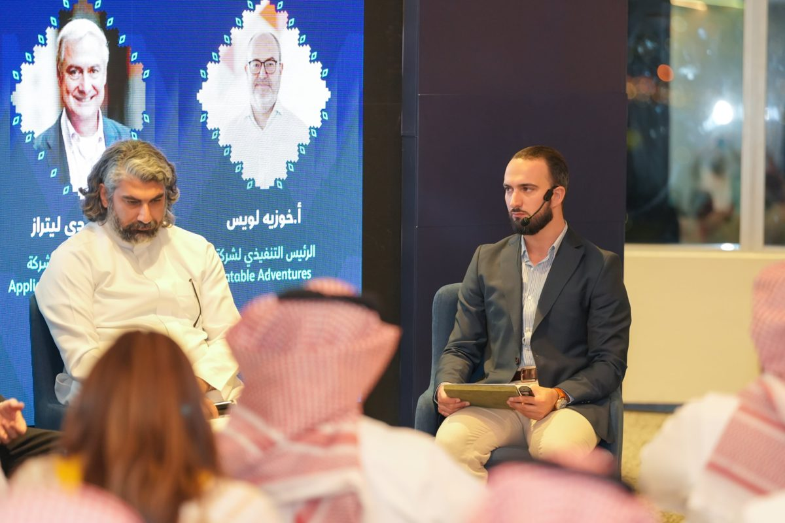
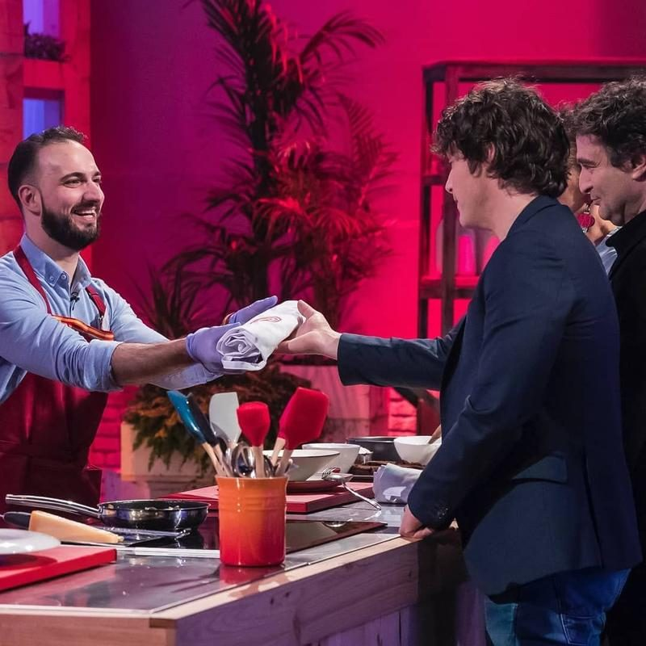
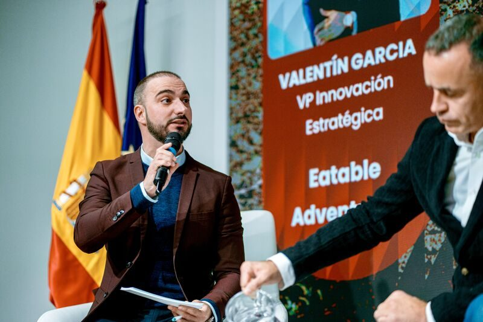
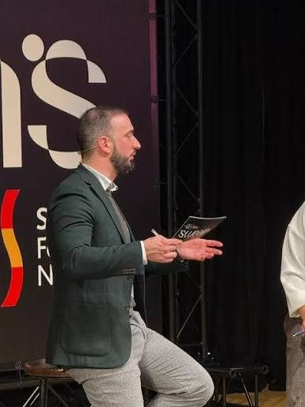
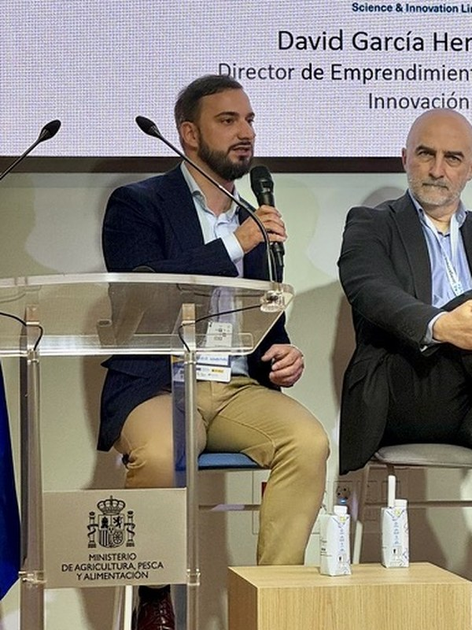

Innovation strategist / Professor / Speaker / Agrifood expert
The future
is built,
not predicted.
Turning innovation into business for companies, institutions and founders. 15+ years of innovation, from industrial design to innovation hubs on three continents. 7+ years focused on agrifoodtech.
Work with meYears of innovation
Years teaching
Startups mentored
Training programs & courses
Innovation hubs launched worldwide
From design
to strategy.
My career started in industrial design, moved into innovation consulting and grew into building food innovation ecosystems. Today the focus is the intersection of strategy, agrifoodtech and agile execution.
Professor & Mentor
Adjunct Professor, IE Business School & IE School of Science and Technology
10+ years teaching design and innovation methodologies and Agile Scrum project management, from bachelor to master programs. Capstone tutor in corporate programs and speaker across IE initiatives. Also lecturer at UNIR, Universidad Europea and IED.
Innovation strategy
Strategic innovation: opportunity mapping, sizing, prioritization, PoCs, pilots and scaling up of new categories and products. Special focus on food and beverage corporations.
Innovation ecosystems
Ideation, launch and daily management of 6 food innovation hubs worldwide, connecting corporations, governments, research centres and startups.
Open Innovation & Venturing
Open innovation programs, corporate venture capital (CVC) design and family office advisory, plus acceleration, validation and fundraising readiness for startups.
Agile & design methods
Design thinking, Scrum, lean startup, SAFe and creative thinking programs and workshops for leadership teams. Certified ScrumMaster® 001777553.
Global speaker
Keynotes, panels and masterclasses across Europe, Latin America, the US and the Middle East. Moderator and conductor who turns complex topics into clear, actionable and engaging experiences for any audience.
Design roots
An award winning industrial design studio, before strategy took over. See the archive
Agrifoodtech
Let's build
the future
of food.
Translating opportunities into tangible growth: identifying strategic, technological and financial growth engines, and activating them through internal and open innovation (accelerators, R&D programs and hubs) that deliver measurable value on the P&L.
People to feed by 2030
Food is facing its biggest challenges in decades. Every one of them is a business opportunity.
The winners will be those who understand the market, the technology and the whole value chain, from farm to shelf.
Highlighted projects.
Worked with.
Ideas
in print.
All articles
Seen & heard.






And yes, you may remember me from the 7th edition of MasterChef Spain. A great experience: I finished in third place, and it was my entrance into food, with a scholarship at the Basque Culinary Center.
Let's build
what's next.
“Technology is never merely technology. It reveals man and his aspirations towards development.”